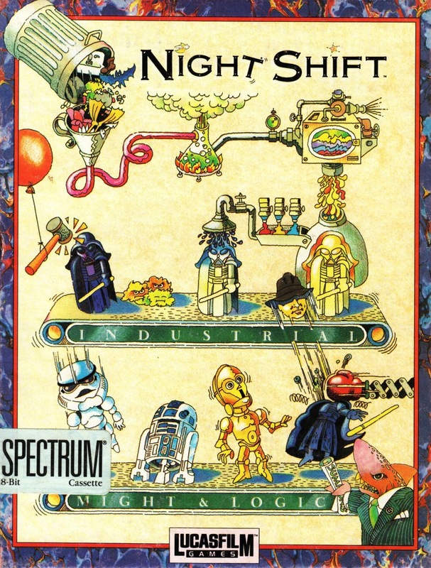
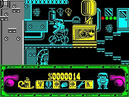

Night Shift


{kind=link}

| Publisher: | US Gold |
| Price: | £10.99 |
| Year: | 1991 |
| Source: | CRASH, Issue 87 |

The Beast might sound as if it belongs to some sword and sorcery game, but it’s the huge machine that produces all the toy dolls from Lucasfilm Games, like Star Wars and Indiana Jones. These toys are so popular their production has to run overnight, and it’s as either Fred or Fiona Fixit that you must complete an order within the allotted time, or it’s the royal order of the boot for you, matey! And the boss is so tight-fisted that you’re the only person overseeing the production, so it’s lucky for you that the Beast is automated.

quick jump on the bike!
The game starts with you being given the order form for the current level. At first it’s fairly easy, as only a couple of different character dolls need to be completed. The first task is to power up the huge machine, achieved by jumping on a bicycle and peddling like mad!
You then have to run and jump up the Beast to fix the inevitable faults that crop up, which include lighting and adjusting the Bunsen burner, kicking a plug, tightening screws, adjusting conveyor belts, mixing paints and plenty more besides.
To help you there’s a tool box (situated in the middle of the status panel); collectable items appear every so often and when picked up are shown in this display. Things like matches, spanners, balloons and umbrellas help you to keep your job.
At the end of the night (level), the timer (a candle) burns right down and the results of your efforts are totted up. If you’ve completed the required amount of toys you receive a hefty bonus, but rejects are deducted from your pay.
As you go on, more characters have to be made, Lemmings and Larry the Lawyer run around hassling you and more and more goes wrong with the Beast... Argggh!! (I think I’m going to sit in a corner and cry!)
Night Shift is easily one of the most frustrating games I’ve ever played. Even the first few levels are difficult to keep up with, but they’re simple compared to later ones, when you need several zillion pairs of eyes to keep track of what’s going on.
Graphically, Night Shift’s very good, although there’s a bit of colour clash — but that’s not a problem because you’re too busy running around like a mad thing to take much notice.
It makes a very refreshing change to see an original game and Night Shift gets a big thumbs up from me (US Gold will be receiving my bill for psychiatric treatment).
MARK — 97%
Night Shift is totally and totally brilliant. After playing endless shoot/beat/puzzle-’em-ups, this is like a breath of fresh air (ahhhh!). The cute cartoon style graphics of the Lucasfilm characters are excellent and the factory machinery is detailed and as well-coloured as can be expected. The complexity of the Night Shift factory may have you slightly flummoxed on your first few goes: you can spend ages just looking for one tiny loose screw or go mad when your dolls come out the wrong colour! But it’s all part of the fun. It’s incredibly rewarding when you get things right, and getting them wrong can be a great laugh, eg, a woman’s head on a bloke’s body! The best advice I can give you is get out your pennies, go down to your local software emporium and get a copy before they’re all sold out!
NICK — 94%
RATING
Action! Puzzles! Addiction! What’s it got? The bloomin’ lot!
| Presentation: | 92% |
| Graphics: | 94% |
| Sound: | 85% |
| Playability: | 95% |
| Addictivity: | 94% |
| Overall: | 96% |